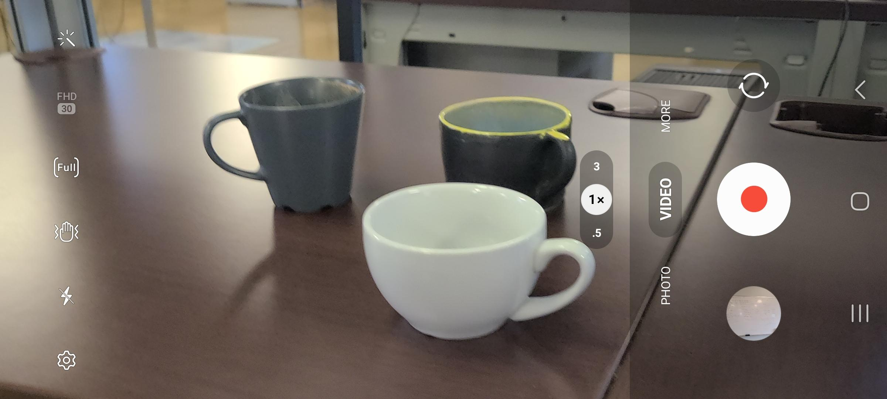
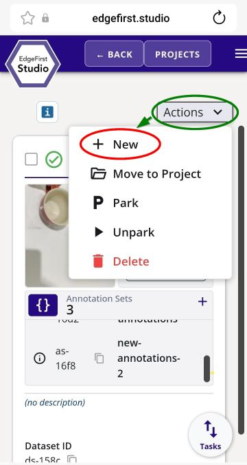
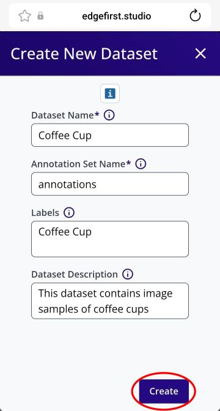
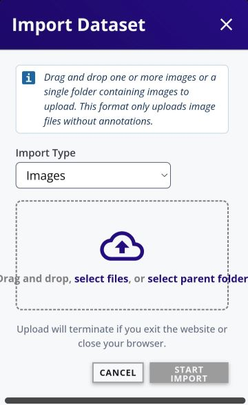
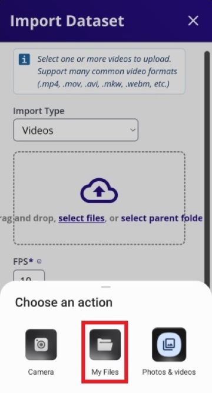
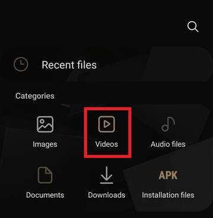
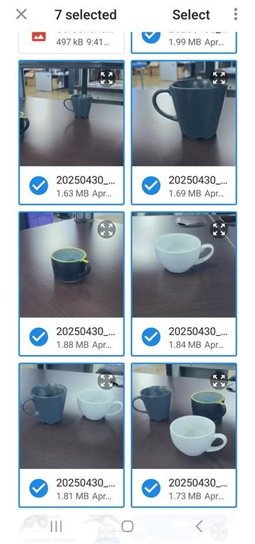
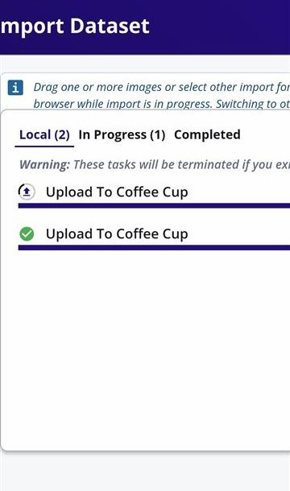
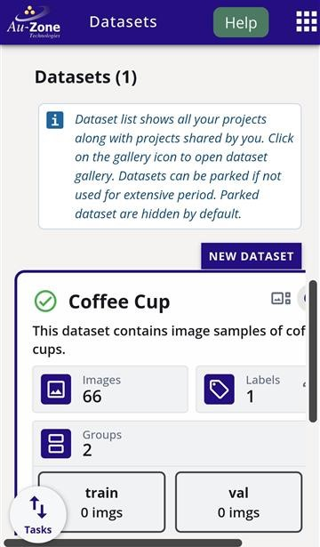

Dataset Capture
This page has tutorials for capturing or collecting samples for datasets and then uploading the samples into EdgeFirst Studio for annotation. At the bare minimum, datasets can be captured with any device with a camera such as a phone. However, EdgeFirst Platforms such as a Maivin or a Raivin can also capture dataset samples for model training which can then be deployed back into the platform for model inference. Image samples will train Vision models. However, devices that are custom fitted with Radar or LiDAR modules such as a Raivin platform can capture dataset samples suited to train Fusion models.
Capture with a Phone
If you have a phone or any device with a camera with Wifi access, follow this tutorial to see how to capture and upload datasets into EdgeFirst Studio.
Data Usage
It is recommended to use a phone connected to a Wifi network. A device connected to mobile data might be subject to intense usage when uploading files; video files or image files can be large in size. In the examples below, the video file used was ~15MB and the image files were ~2MB each.
Record Video
Using a smartphone, you can record a video with the camera application as shown below. Typically, the video recording can be started by pressing the red circular button. The video can be stopped by pressing the same button again.

Capture Images
Furthermore, you can also capture individual images as shown below. You can take image snapshots from the camera by pressing the white circular button.

Leveraging Videos
It is recommended to use videos rather than individual images. This is because the Automatic Ground Truth Generation (AGTG) feature leverages SAM-2 with tracking information which only needs a single annotation to annotate all frames. However, individual images requires more effort by annotating each image separately.
Limited Datasets
Throughout the demos, the dataset is kept small. However, training on limited datasets will result in poor model performances when the model is deployed under conditions that differs from the dataset samples. It is suggested to increase the amount of training data under various conditions and backgrounds to train a more robust model.
Create Dataset
If you have a video recording or sample images for your dataset, you can create a dataset container in EdgeFirst Studio to contain your video frames or images and annotations.
Navigate to a web browser and login to EdgeFirst Studio. Once logged in to EdgeFirst Studio, navigate to your project. In this case the project name is "Object Detection". Click on the "Datasets" button that is indicated in red below.

This will bring you to the "Datasets" page of the selected project. Create a new dataset container by clicking the "New Dataset" button that is indicated in red.

Add the dataset and annotation container name, labels, and dataset description as indicated by the fields below. It is up to you to specify the information in the fields and you do not have to strictly follow the example shown below. Click the "Create" button once the fields have been filled.

Your created dataset will look as follows.

Upload Video
Video files can be uploaded into any dataset container in EdgeFirst Studio. Choose the dataset container to upload the video file. In this case, the dataset is called "Coffee Cup". Click on the dataset context menu (three dots) and select import.

This will bring you to the "Import Dataset" page.

Click on the drop-down that says "Import Type" and then specify "Videos" and then click "Done" as shown below.

Now that the import type is specified to a "Videos", click on "select files" as indicated.

On an android device, this will bring up the option to specify the location of the files.

In my current setup, I have selected "My Files" from the options above and then "Videos" which will allow me to pinpoint the location of the video I have recorded.

Once the video file has been selected, set the desired FPS (frames per second), and then go ahead and click the "Start Import" button to start importing the video file.

This will start the import process and once it is completed, you should see the number of images in the dataset increased. If you do not see any changes, refresh the browser.

Upload Images
Image files can be uploaded into any dataset container in EdgeFirst Studio. Choose the dataset container to upload image files. In this case, the dataset is called "Coffee Cup". Click on the dataset context menu (three dots) and select import.
This will bring you to the "Import Dataset" page.
Click on "select files". This will bring up the option to specify the location of the files.

In my current setup, I have selected "Photos & Videos" from the options above and then I have multi-selected the images I want to import by press and hold on a single image to enable multi-select. To import, I pressed "Select".

Once the image files have been selected, the progress for the image import will be shown.

Once it completes, you should see the number of images in the dataset increase by the amount of selected images. If you do not see any changes, refresh your browser.

In this tutorial you have seen how to capture videos and images from your mobile phone and upload the videos and images into EdgeFirst Studio. Proceed to the Next Steps to see what's next in your dataset creation.
Capture with an EdgeFirst Platform
If you have an EdgeFirst Platform, follow this tutorial to see how to capture and upload datasets into EdgeFirst Studio. Use your browser to connect to the Web UI of the remote device, enter the following URL https://<hostname>/.
Note
Replace <hostname> with the hostname of your device.
You will be greeted with the Maivin Web UI Main Page page.

Record MCAP
MCAP recordings can be started and stopped using the Recording Button at the device's top navbar. It is to the left of the MCAP Details hamburger button, which is used to open the MCAP Details Modal.

Both of these buttons are available on every page of the Maivin, Raivin, and other edge devices running the EdgeFirst middleware.
Note
You must close all modals to be able to click the "Recording" and "Details" Buttons.
For more information about recording MCAPs, please read the MCAP Recording section.
Start Recording
To start a recording, simply click the "Recording" button to begin capturing data.

Note
It may take up to 30 seconds for a recording to start, depending on topic tracked.
Low Disk Space
If there is not enough room on the drive to record an MCAP, recording will automatically stop and you will get a "Low Disk Space" error.

If you were to open the MCAP Details Modal while recording, you would see a new MCAP file in the MCAP list.

Stop Recording
To stop recording, click the "Recording" button a second time.
Download MCAP
To download an MCAP recording from the device, click the MCAP Details hamburger button  to open the MCAP Details Modal.
to open the MCAP Details Modal.

Use the "Download" button  in the row containing the name of the MCAP file you want to download, which will download the MCAP file to your local machine.
in the row containing the name of the MCAP file you want to download, which will download the MCAP file to your local machine.
You can also use an SSH client to copy files off the Raivin.
Upload MCAP
To upload an MCAP Recording into EdgeFirst Studio, first login to EdgeFirst Studio. Once logged in to EdgeFirst Studio, navigate to the "Data Snapshots" under the tool options.

Note
A project has already been created intended for object detection. This step has been covered in Getting Started.
Once you are in the "Data Snapshots" page, upload the recorded MCAP by clicking "From File" which opens a new window dialog for selecting the MCAP downloaded in your PC.
EdgeFirst Datasets
You can also drag and drop EdgeFirst Datasets Zip and Arrow files in the "Data Snapshots".

Once the MCAP file is selected, this would start the upload progress in EdgeFirst Studio. This upload progress may take several minutes depending on the size of the MCAP. Once the upload is complete, the status will be shown like the figure on the right.
| Upload Progress | Completed Upload |
|---|---|
 |
 |
In this tutorial you have seen how to record MCAPs using an EdgeFirst Platform and downloaded and uploaded the MCAP recording into EdgeFirst Studio. Proceed to the Next Steps to see what's next in your dataset creation.
Video Tutorials
This video tutorial provides high-level instructions for recording MCAPs using an EdgeFirst Platform. For in-depth documentation, please refer to the MCAP Recording Service.
This video tutorial shows how to download recorded MCAPs.
This video tutorial shows how to upload recorded MCAPs into EdgeFirst Studio.
For more information on managing recordings, please see the Managing Recordings Section.
Next Steps
See the imported files by viewing the dataset gallery.
EdgeFirst Studio also supports import of existing datasets and its annotations with various formats.
For auto-annotating datasets, see the Automatic Ground Truth Generation (AGTG). Otherwise, you can perform manual annotations which is typically used to correct errors or make some adjustments in the annotations.